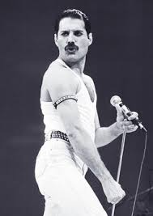

Queen se formó en 1971. En 1973 firmaron su primer contrato para grabar con EMI. Ese mismo año, lanzaron su álbum debut, Queen, y tuvieron su primera gran gira. En 1974 lanzaron Queen II e hicieron su primera gira como banda principal. También en ese año, hicieron su primera gira por EEUU, y durante el mes de noviembre lanzaron Sheer Heart Attack, que fue un éxito en ambos lados del Atlántico. En 1975 publicaron el álbum A Night At The Opera, y el importante sencillo, Bohemian Rhapsody. Con una duración total de 5’ 55”, este track era demasiado largo para ser un éxito en la radio, sin embargo, se convirtió en uno de los más grandes sencillos de todos los tiempos, permaneciendo en la posición núm. 1 en los charts del Reino Unido por nueve semanas. El video, dirigido por Bruce Gowers, es conocido como el primer video para fines genuinamente promocionales. La canción constantemente se incluye en las principales encuestas populares y ha sido nombrada de nuevo como el mejor sencillo de todos los tiempos, recientemente. El éxito de A Night At The Opera fue igual de impresionante, otorgando a la banda su primer disco de Platino. En 1976 hicieron gira por EEUU y Japón, y durante la primavera, sus cuatro álbumes estaban en el top 20 de las listas británicas. Más adelante, en ese mismo año, publicaron A Day At The Races, y dieron un concierto gratuito en Hyde Park, ante una audiencia de 200,000 fans aproximadamente. El álbum fue un gran éxito, con pedidos por anticipado de más de 500,000 unidades. Durante el siguiente año, hicieron dos grandes giras por EEUU y lanzaron su sexto álbum, News Of The World, y el legendario sencillo doble, We Will Rock You y We Are The Champions. El álbum Jazz de 1978 incluyó otro gran éxito, Bicycle Race. Queen realizó una gira por EEUU y Canadá. Pasaron la mayor parte de 1979 de gira por Europa y Japón, y en ese año publicaron su primer álbum en vivo, Live Killers. También recibieron la propuesta de escribir la música para un film, Flash Gordon. Antes de ello, lanzaron The Game en 1980. Este disco se convirtió en 5 veces disco de platino, ¡tan solo en Canadá! Another One Bites The Dust se convirtió en su sencillo más vendido en Estados Unidos. Más adelante, en ese año, el soundtrack de la película Flash Gordon fue publicado, y a finales del año Queen había vendido más de 45,000,000 de álbumes en todo el mundo. En 1981 se fueron de gira por el Lejano Oriente, y fueron la primera agrupación en llevar a cabo una gira por Sudamérica, presentándose en estadios. Tocaron ante 131,000 personas en Sao Paulo, convirtiéndose en la audiencia más numerosa con boleto pagado en la historia de la música. Greatest Hits, Greatest Flix y Greatest Pix fueron publicados simultáneamente más adelante durante ese año, y Greatest Hits raramente ha estado fuera de las listas de populariad del Reino Unido, desde entonces. Greatest Flix fue la primera colección de videos promocionales lanzada comercialmente por alguna banda. El siguiente año se lanzó el doceavo álbum, Hot Space, mientras estaban a la mitad de una gira por Europa. En 1984 salió The Works con el sencillo Radio Ga Ga, que se convirtió en un éxito mundial, alcanzando la posición núm. 1 en 19 países. Otro gran éxito fue I Want To Break Free, con uno de sus videos más famosos, todos disfrazados en “drag”. En 1985 fueron el grupo principal en Rock in Rio, el festival más grande en cualquier parte del mundo. Y, de nueva cuenta, hicieron historia ese año con su victoriosa presentación en Live Aid, desde el estadio de Wembley. Ocasión que se convirtió en un momento decisivo para la agrupación, con One Vision como el primer lanzamiento luego de Live Aid. En 1986 se publicó su 14º álbum, A Kind Of Magic, que fue también el soundtrack para Highlander, película de Russel Mulcahy. El track que dio título al álbum se convirtió en otro éxito mundial, y el álbum entró a los charts británicos en el núm. 1; más adelante en ese año, su segundo álbum en vivo, Live Magic, llegó a la posición núm. 3 en los charts. Entre 1988 y 1991 Queen publicó otros tres álbumes más, The Miracle en 1989 y en 1991 Innuendo y Greatest Hits II. Los tres entraron a los charts británicos en la posición núm. 1, así como el sencillo Innuendo En 1981 se fueron de gira por el Lejano Oriente, y fueron la primera agrupación en llevar a cabo una gira por Sudamérica, presentándose en estadios. Tocaron ante 131,000 personas en Sao Paulo, convirtiéndose en la audiencia más numerosa con boleto pagado en la historia de la música. Greatest Hits, Greatest Flix y Greatest Pix fueron publicados simultáneamente más adelante durante ese año, y Greatest Hits raramente ha estado fuera de las listas de populariad del Reino Unido, desde entonces. Greatest Flix fue la primera colección de videos promocionales lanzada comercialmente por alguna banda. El siguiente año se lanzó el doceavo álbum, Hot Space, mientras estaban a la mitad de una gira por Europa. En 1984 salió The Works con el sencillo Radio Ga Ga, que se convirtió en un éxito mundial, alcanzando la posición núm. 1 en 19 países. Otro gran éxito fue I Want To Break Free, con uno de sus videos más famosos, todos disfrazados en “drag”. En 1985 fueron el grupo principal en Rock in Rio, el festival más grande en cualquier parte del mundo. Y, de nueva cuenta, hicieron historia ese año con su victoriosa presentación en Live Aid, desde el estadio de Wembley. Ocasión que se convirtió en un momento decisivo para la agrupación, con One Vision como el primer lanzamiento luego de Live Aid. En 1986 se publicó su 14º álbum, A Kind Of Magic, que fue también el soundtrack para Highlander, película de Russel Mulcahy. El track que dio título al álbum se convirtió en otro éxito mundial, y el álbum entró a los charts británicos en el núm. 1; más adelante en ese año, su segundo álbum en vivo, Live Magic, llegó a la posición núm. 3 en los charts. Entre 1988 y 1991 Queen publicó otros tres álbumes más, The Miracle en 1989 y en 1991 Innuendo y Greatest Hits II. Los tres entraron a los charts británicos en la posición núm. 1, así como el sencillo Innuendo En 1981 se fueron de gira por el Lejano Oriente, y fueron la primera agrupación en llevar a cabo una gira por Sudamérica, presentándose en estadios. Tocaron ante 131,000 personas en Sao Paulo, convirtiéndose en la audiencia más numerosa con boleto pagado en la historia de la música. Greatest Hits, Greatest Flix y Greatest Pix fueron publicados simultáneamente más adelante durante ese año, y Greatest Hits raramente ha estado fuera de las listas de populariad del Reino Unido, desde entonces. Greatest Flix fue la primera colección de videos promocionales lanzada comercialmente por alguna banda. El siguiente año se lanzó el doceavo álbum, Hot Space, mientras estaban a la mitad de una gira por Europa. En 1984 salió The Works con el sencillo Radio Ga Ga, que se convirtió en un éxito mundial, alcanzando la posición núm. 1 en 19 países. Otro gran éxito fue I Want To Break Free, con uno de sus videos más famosos, todos disfrazados en “drag”. En 1985 fueron el grupo principal en Rock in Rio, el festival más grande en cualquier parte del mundo. Y, de nueva cuenta, hicieron historia ese año con su victoriosa presentación en Live Aid, desde el estadio de Wembley. Ocasión que se convirtió en un momento decisivo para la agrupación, con One Vision como el primer lanzamiento luego de Live Aid. En 1986 se publicó su 14º álbum, A Kind Of Magic, que fue también el soundtrack para Highlander, película de Russel Mulcahy. El track que dio título al álbum se convirtió en otro éxito mundial, y el álbum entró a los charts británicos en el núm. 1; más adelante en ese año, su segundo álbum en vivo, Live Magic, llegó a la posición núm. 3 en los charts. Entre 1988 y 1991 Queen publicó otros tres álbumes más, The Miracle en 1989 y en 1991 Innuendo y Greatest Hits II. Los tres entraron a los charts británicos en la posición núm. 1, así como el sencillo Innuendo En 1981 se fueron de gira por el Lejano Oriente, y fueron la primera agrupación en llevar a cabo una gira por Sudamérica, presentándose en estadios. Tocaron ante 131,000 personas en Sao Paulo, convirtiéndose en la audiencia más numerosa con boleto pagado en la historia de la música. Greatest Hits, Greatest Flix y Greatest Pix fueron publicados simultáneamente más adelante durante ese año, y Greatest Hits raramente ha estado fuera de las listas de populariad del Reino Unido, desde entonces. Greatest Flix fue la primera colección de videos promocionales lanzada comercialmente por alguna banda. El siguiente año se lanzó el doceavo álbum, Hot Space, mientras estaban a la mitad de una gira por Europa. En 1984 salió The Works con el sencillo Radio Ga Ga, que se convirtió en un éxito mundial, alcanzando la posición núm. 1 en 19 países. Otro gran éxito fue I Want To Break Free, con uno de sus videos más famosos, todos disfrazados en “drag”. En 1985 fueron el grupo principal en Rock in Rio, el festival más grande en cualquier parte del mundo. Y, de nueva cuenta, hicieron historia ese año con su victoriosa presentación en Live Aid, desde el estadio de Wembley. Ocasión que se convirtió en un momento decisivo para la agrupación, con One Vision como el primer lanzamiento luego de Live Aid. En 1986 se publicó su 14º álbum, A Kind Of Magic, que fue también el soundtrack para Highlander, película de Russel Mulcahy. El track que dio título al álbum se convirtió en otro éxito mundial, y el álbum entró a los charts británicos en el núm. 1; más adelante en ese año, su segundo álbum en vivo, Live Magic, llegó a la posición núm. 3 en los charts. Entre 1988 y 1991 Queen publicó otros tres álbumes más, The Miracle en 1989 y en 1991 Innuendo y Greatest Hits II. Los tres entraron a los charts británicos en la posición núm. 1, así como el sencillo Innuendo
 Queen
Queen